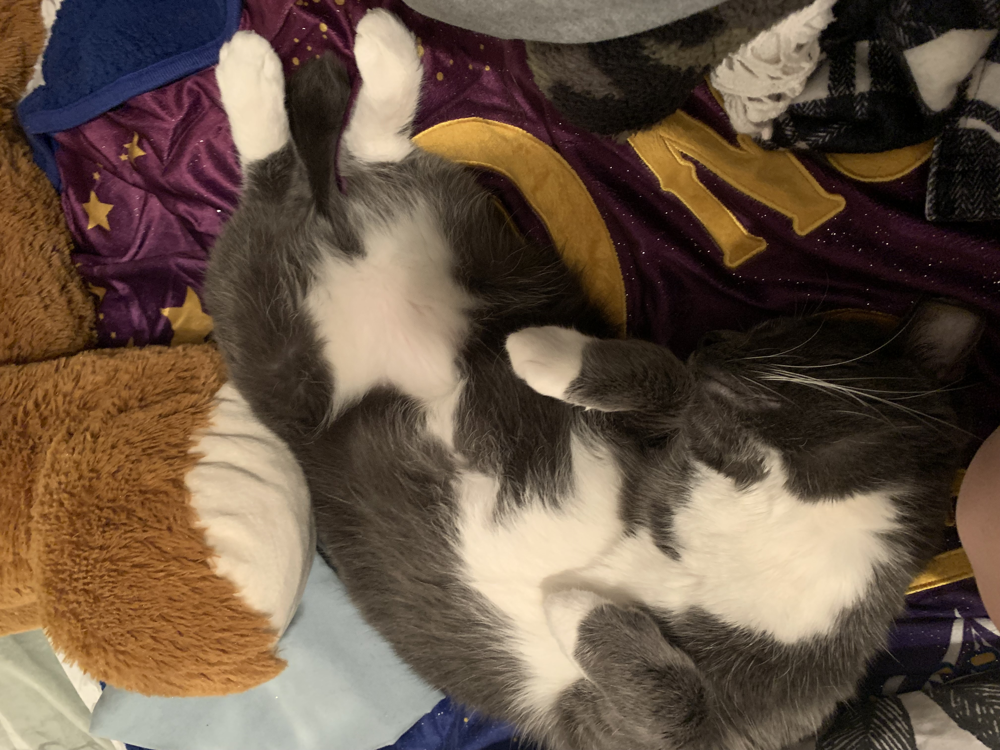
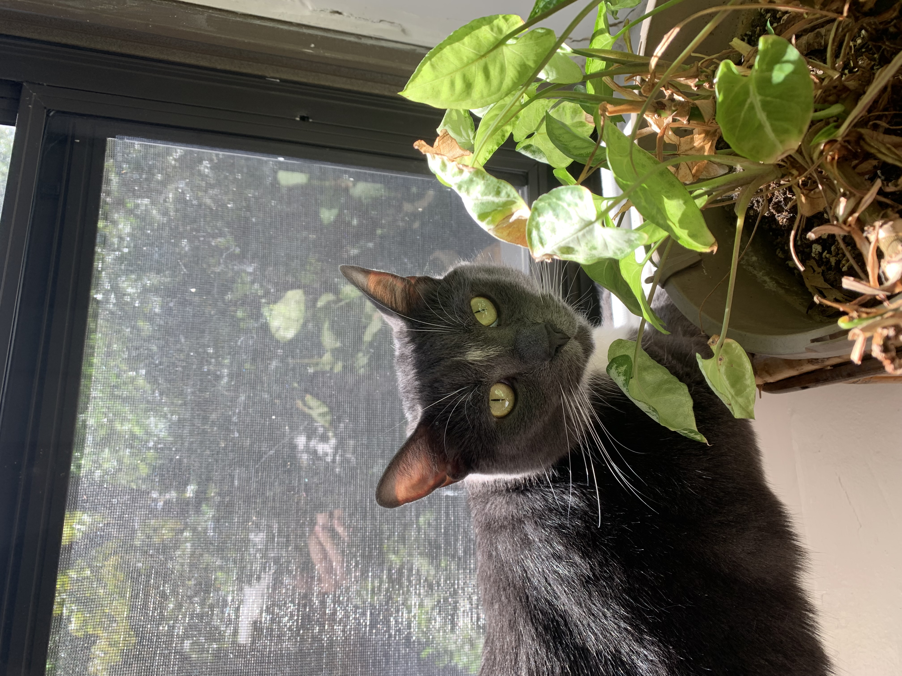

On Wednesday Miku started the day by pushing his metal cat foot bowl around the tile floor. He decided that at precisely 4:00am, it was time for the house to wake up and feed him. After his food was in the bowl he began to chow and by 4:05am he was ready for seconds and then thirds. After a long morning of many breakfasts, Miku decided to take a nap and let the house sleep as well. By 8:30am he decided that his older brother, Jack, was in his spot. So Miku chased his brother out of his designated "my-spot-not-your-spot" spot. Jack came to tell me of Miku's bullying at 9:00am by jumping on my face. Miku continued his day peacefully untill it was time for his first lunch. That is when the battle to the death had begun.. Miku won (But do not fear. Everyone was okay and was fed till their bellies were full). The rest of Miku's day was filled with naps and random attacks to give his brother some healthy exercise. By midnight Miku joined his brother in the 5k around the house. The end.
Jack may lose again but we shall show our love and support in hope that one day Miku will get his brother to workout with him.
